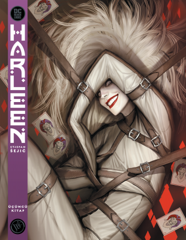

Harleen Üçüncü Kitap
Çeviren
Şeref Atak
Sayfa
64
Dil
Tr
Ne hakkında?
Gotham’ın deliliğine çare bulduğuna inanan genç ve zeki psikiyatr Dr. Harleen Quinzel, şehri kendinden korumak için sıkı önlemler alıyor. Beğeni toplayan öykücü Stjepan Sejic (Aquaman: Underworld, Sunstone) tarafından hazırlanan ve Harley ile Joker’in çarpık ve trajik aşkını ele alan bu büyüleyici yeni hikâyede, efsanevi süper kötü Harley Quinn’in doğuşuna tanık olun.